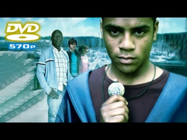
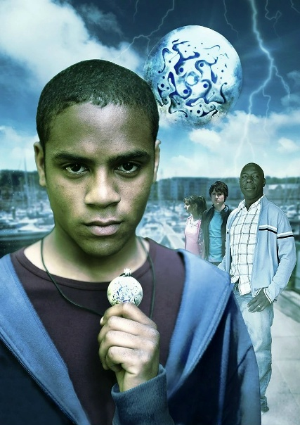

The Mark of the Berserker
Дата выхода: 3-10 ноября 2008
Формат: 2 эпизода по 30 мин.
| Варианты озвучек: | * Разные: смотрите по инструкции |
|---|---|
| Скачивание и просмотр: |
С чердака Сары Джейн украден инопланетный медальон, который предоставляет возможность владельцу контролировать других людей. Мама Клайда сообщает, что её сын и его отец, который ушёл из семьи, пропали - и у них с собой медальон, Рани и Люк отправляются на поиски. Погоня завершится серьёзным противостоянием у побережья, ведь медальон уже начинает преобразовывать Пола…
